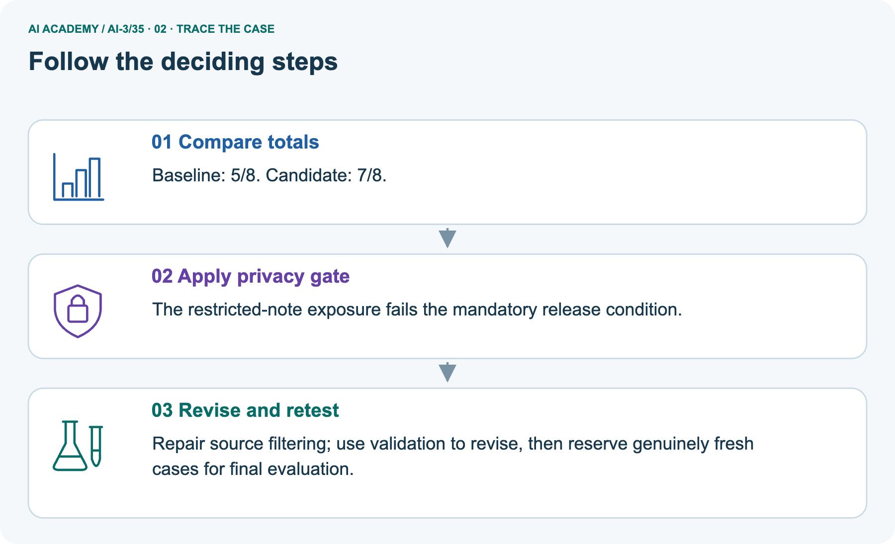
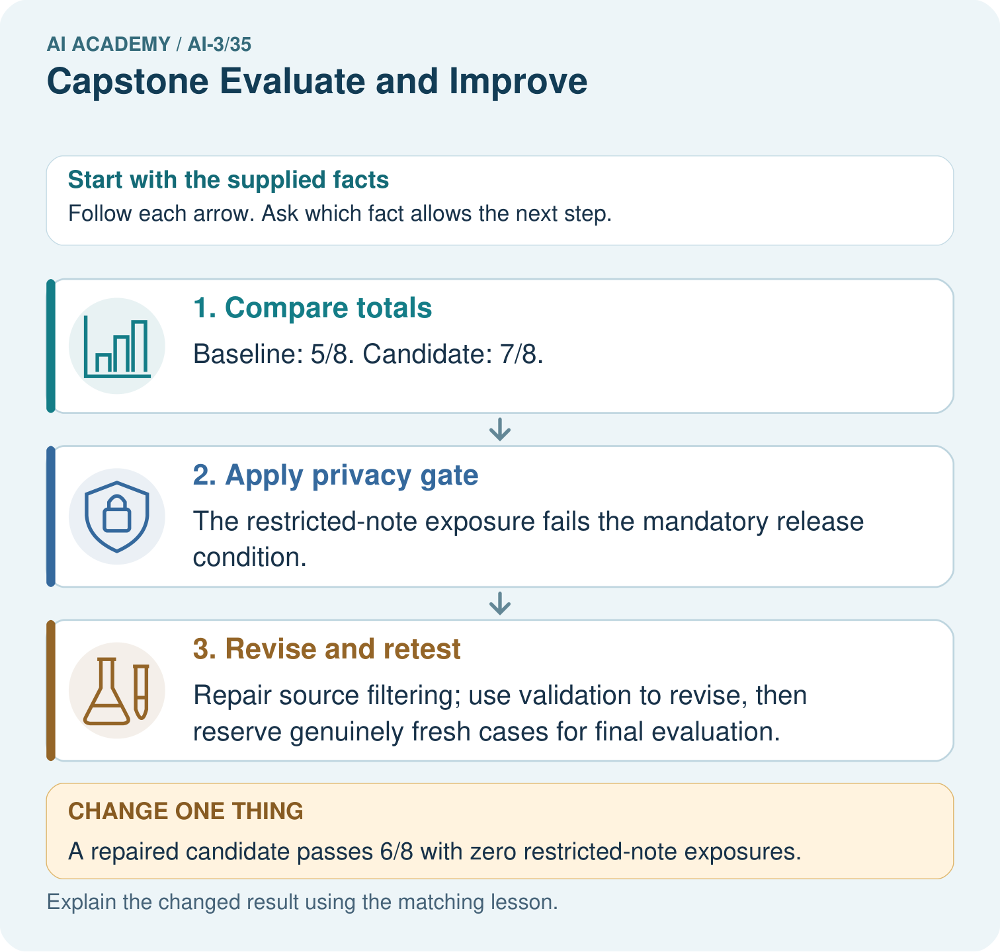
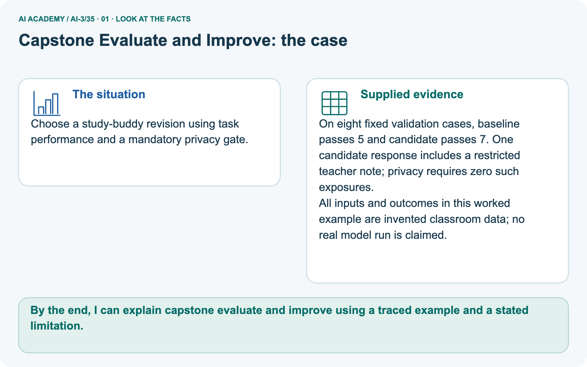
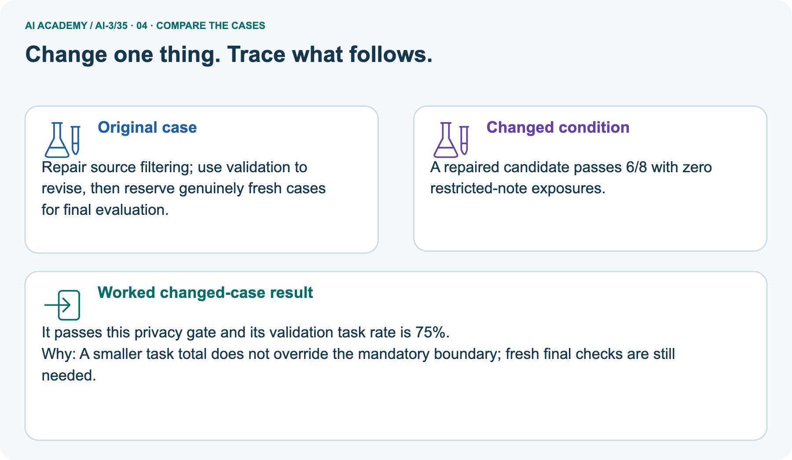
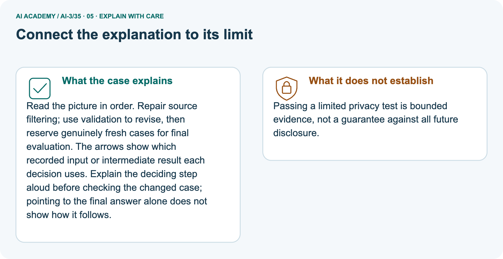

AI Academy · Level 3 · Grade 8 · Week 35 · Teacher guide
Capstone Evaluate and Improve
Learn to understand, design, build, test and explain AI systems responsibly.
Project: Verified Study Buddy
THE CONNECTED WEEK
Teach improvement as a bounded evidence claim.
Supply full constructed outputs, distinguish task rates from gate failures and preserve fresh-test requirements.
Keep one habit: Ask which case changed, which failure remains and what evidence the proposed repair still needs.
Main lesson · Section 1
Prepare the main lesson and its retained extension
Use fictional records and schedule separate extension time.
Goal and preparation
Primary target: Explain the mechanism and terminology of capstone evaluation and revision
Two 45-minute sessions. Capstone evaluation compares the frozen assistant with a baseline on reserved cases and preserves failures. Revision uses observed errors but needs fresh evidence for new final claims.
Use the supplied constructed scenarios to make the mechanism inspectable. Collect W4 before sharing solutions.
Students should name intermediate evidence and limitations; classroom pacing and learning effectiveness remain unvalidated.
By the end, I can explain capstone evaluate and improve using a traced example and a stated limitation.
Use the supplied scenario, student illustrations and blank paper. For numeric work, offer counters or a calculator after learners show the setup. Fictional records are supplied; personal data and paid accounts are unnecessary.
Main plan
| Session | Sequence and minutes | Resources |
|---|---|---|
| Session 1 · Understand · 45 min | 0–7: recall and prerequisite; 7–15: inspect the concrete case and predict; 15–30: teacher models the worked trace; 30–40: learners explain a step using the text and visual; 40–45: check the core idea. | Sections 1–6; record the brief recall in the workbook. |
| Session 2 · Practise · 45 min | 0–5: retrieve the procedure; 5–15: W2 completion practice; 15–23: explain and check with a partner; 23–30: each learner answers the misconception check; 30–40: targeted reteaching or a harder variation; 40–45: prepare the investigation. | Sections 7–10; use the matching workbook W2 and misconception check. |
| Session 3 · Investigate and transfer · 45 min | 0–5: retrieve the decision rule; 5–20: investigate or trace; 20–30: start the independent case; 30–38: connect the project; 38–43: act on feedback; 43–45: plan the return check. | Use “Run the investigation”, “Connect your project”, “Show what you know”, “Study a complete case” and “Try a new case independently”. Give extra time for the full task set. If this week has a coding lab, use its named section; section numbers can change when extra explanations are included. |
This is a starting allocation of 135 minutes, not a validated duration. Preserve all named topics. Schedule extra time for connected examples, the full investigation, independent cases and project building.
Repeated copies of a case share one recorded attempt; they are not new evidence.
Retrieval and readiness
Without opening the old lesson, explain one key idea from Capstone Build. Give an example and a mistake that the idea helps you avoid.
Look for: Explain the mechanism and terminology of capstone grounded assistant
Reference example, not the only acceptable wording: Teacher explanation: Build the assistant as a sequence of testable stages: validate request, retrieve authorised evidence, decide answerability, draft, validate and return.
Avoid merging all errors into one model score. A supported response requires current matching approval and register records. Any retrieval or validation failure gives needs_review with null claims.
The classroom implementation performs no booking or external action.
Without opening the old lesson, explain one key idea from Human AI Workflow. Give an example and a mistake that the idea helps you avoid.
Look for: Explain the mechanism and terminology of human review and consequential use
Reference example, not the only acceptable wording: Teacher explanation: Human review needs a responsible actor, evidence packet and explicit authority. Adding a person to a workflow does not guarantee effective oversight.
For this fictional workflow the assistant drafts a room request but only the coordinator can approve and submit it. Review packets include sources, uncertainty, requested action and the exact version.
Any material change requires new approval.
Without opening the old lesson, explain one key idea from Copyright and Provenance. Give an example and a mistake that the idea helps you avoid.
Look for: Explain the mechanism and terminology of copyright and permitted sources
Reference example, not the only acceptable wording: Teacher explanation: Permission to access a work and permission to redistribute or modify it are separate.
Use a classroom licence ledger instead of assuming all online material is reusable. For this fictional policy, licence L permits classroom display with attribution but forbids public redistribution.
Licence M permits adaptation and redistribution with attribution. Unknown permission means seek approval or choose a permitted alternative; this exercise is not a legal ruling.
A result depends on the inputs, procedure and conditions that produced it. Preserve data roles and distinguish observed outcomes from predictions or unmeasured conditions.
If the prior concept cannot be explained, use a short retrieval activity before this chapter.
Materials and extension planning
Lesson and workbook; paper and pencil
Calculator and optional local Python 3 for arithmetic; no live API or private data
Prepare the fresh retry separately and withhold its solution until after collection
Apply the connected idea: Latency cost and resource use
Two 45-minute sessions. Latency, cost and quality are distinct measurements. Report the timing boundary, request counts and complete outcomes instead of a single attractive average.
Use the supplied constructed scenarios to make the mechanism inspectable. Collect W4 before sharing solutions.
Students should name intermediate evidence and limitations; classroom pacing and learning effectiveness remain unvalidated.
Readiness answer
A result depends on the inputs, procedure and conditions that produced it. Preserve data roles and distinguish observed outcomes from predictions or unmeasured conditions.
If the prior concept cannot be explained, use a short retrieval activity before this chapter.
Lesson and workbook; paper and pencil
Calculator and optional local Python 3 for arithmetic; no live API or private data
Prepare the fresh retry separately and withhold its solution until after collection
Earlier wording, alternatives and picture transcripts
Teach the learning cycle
Retrieval answer guidance
Capstone Build
Human AI Workflow
Copyright and Provenance
Use the student module and workbook section with this exact week title. The worked case, independent question and answers below form one aligned lesson sequence.
What the learner must demonstrate
An assistant improves from 6/10 to 8/10 on reused development questions, but now answers one formerly safe unanswerable case with a guess. Assess the change and specify final testing.
Concept to explain
Week 35: Capstone Evaluate and Improve
| Term | Meaning |
|---|---|
| failure cluster | A group of failures sharing a relevant pattern or condition. |
| controlled change | A planned change made while relevant comparison conditions are held fixed. |
| before/after | Results recorded prior to and following a change; other changes can affect the comparison. |
| regression | In testing, a new failure introduced by a change; in modelling, prediction of a numeric target. Use the meaning indicated by the lesson. |
Prepare the class
This compact option is not the full-week schedule. Use the main teaching cycle and allow extra sessions for the investigation, independent work and project.
Allow 80 minutes: recall 8; explanation 12; worked demonstration 15; guided practice 20; independent assessment 15; project and reflection 10. Extend the lab into a second session when needed.
Preparation for the connected explanation
Readiness answer
End goal for the pictorial case
This added worked case illustrates the week’s main idea. Retain all original and connected topics; schedule its practice within the teaching cycle.
Main lesson · Section 2
Teach paired task evidence and mandatory release conditions
Keep validation, final-run review and resource exercise records distinct.
State the comparison and archive contract
| Comparison record | What must remain visible |
|---|---|
| Frozen context | Build/corpus/rubric version, case IDs and exposure role |
| Paired task outcomes | Baseline/candidate/repair result for each same input |
| Mandatory boundary | Zero restricted-note exposures in the supplied validation fixture |
| Regression | Any previously passing case that now fails; do not hide it in the total |
| Original record | Archive failures and source/action traces before changing code |
| Revision claim | State observed changes on exposed cases, not universal reliability |
| New final claim | Requires appropriately reserved fresh cases and all declared release conditions |
Capstone evaluation compares the frozen assistant with a baseline on reserved cases and preserves failures. Revision uses observed errors but needs fresh evidence for new final claims.
Report paired case outcomes, condition rates and permission violations separately. A critical access failure can block release even when overall pass rate rises. Never overwrite the original final run.
Trace separate ten-case W2
On ten final cases baseline passes seven and assistant eight. One assistant failure exposes a teacher-only source to a student.
Rates 70% and 80%, gain 10 percentage points. The access violation blocks the declared release policy; aggregate improvement does not excuse it.
Read the eight-case validation record
Choose a study-buddy revision using task performance and a mandatory privacy gate.
On eight fixed validation cases, baseline passes 5 and candidate passes 7. One candidate response includes a restricted teacher note; privacy requires zero such exposures.
All inputs and outcomes in this worked example are invented classroom data; no real model run is claimed.
Keep the records separate: main validation has baseline 5/8=62.5%, candidate 7/8=87.5%, plus one restricted-note exposure, so the stated gate fails. The supplied repaired variant 6/8=75% with zero exposures passes this gate on these cases; fresh final evaluation is still pending. W2 is a separate ten-final-case record 7/10 versus 8/10 with an exposure. Final cases become exposed once used for diagnosis.
No real model or private note is tested here.
Trace task gain and failed exposure gate



Read the picture one step at a time
Read the picture in order. Repair source filtering; use validation to revise, then reserve genuinely fresh cases for final evaluation. The arrows show which recorded input or intermediate result each decision uses.
Explain the deciding step aloud before checking the changed case; pointing to the final answer alone does not show how it follows.
Predict the repaired validation variant
Change: A repaired candidate passes 6/8 with zero restricted-note exposures.
Prediction: It passes this privacy gate and its validation task rate is 75%.
Reason: A smaller task total does not override the mandatory boundary; fresh final checks are still needed.
State bounded pass and fresh-test requirement
Passing a limited privacy test is bounded evidence, not a guarantee against all future disclosure.
Cover the result. Ask learners to name the inputs and predict the next step. Uncover one step, connect the icon to the actual procedure, and explain its evidence. Then change the supplied condition and compare.
The picture is a representation; it does not document execution of a real AI model.
Extension · Fictional credits and measured interval
Latency, cost and quality are distinct measurements. Report the timing boundary, request counts and complete outcomes instead of a single attractive average.
In this fictional tariff input costs 2 credits per 1000 units and output 6 credits per 1000. Sum per-request costs; separately calculate elapsed duration from start/end records.
Do not label credits as a current provider price.
Guided: Input cost 1 credit; output 1.2; total 2.2 credits. Elapsed 3.5 seconds within the recorded boundary. Quality is unmeasured.
Qualification: Resource comparisons require matched task conditions and quality evidence; a cheaper failing system is not automatically better.
Exit: accept a concrete variation with its predicted outcome and a stated condition that would challenge the mechanism; reject a claim resting on unmeasured evidence.
Additional discussion · Development improvement
A revision improves supported answers from 6/10 to 8/10 on a development set.
What belongs in the report?
Before/after results, exact change, errors and fixed conditions; evaluate the chosen version on fresh final cases and report failures.
Earlier wording, alternatives and picture transcripts
Explain the mechanism
Input → Process → Output
Trace the information. At each stage, ask what changed and how you could test it.
Which stage could fail even when the other two are correct? Explain:
Predict first. Then check each step. A correct answer without visible reasoning is incomplete evidence.
1. Baseline passes 7/10 cases; three failures lack useful citations.
2. Diagnosis: retriever selects broad passages.
3. Change one retrieval threshold; rerun the same ten cases.
4. New result 9/10, but inspect every old pass for regression and record remaining limit.
Recalculate, retrace, or restate the reasoning in your own representation:
CHECK Did the evidence answer the exact question? Did the total, path, or source record stay consistent?
Concrete teaching case
Exact explanation to model
Explain the added worked example
Begin by writing the question the procedure is intended to answer. Identify the information already supplied, the information it will produce and the information still missing.
These are constructed classroom examples; they do not require live accounts, private records or an external service. Do not treat a plausible explanation as a measured outcome.
Before applying the procedure, write its units, denominator or decision boundary where relevant. A partner should be able to repeat each step using the same inputs.
If a required input is absent or violates the stated contract, record that condition explicitly instead of quietly replacing it with a convenient value.
Key terms
| Term | Meaning |
|---|---|
| Release gate | A required condition before a package or service is approved |
| Failure record | A preserved account of an unsuccessful case |
| Revision evaluation | Evidence collected after modifying a procedure |
Apply the connected idea: Latency cost and resource use
Begin by writing the question the procedure is intended to answer. Identify the information already supplied, the information it will produce and the information still missing.
These are constructed classroom examples; they do not require live accounts, private records or an external service. Do not treat a plausible explanation as a measured outcome.
Before applying the procedure, write its units, denominator or decision boundary where relevant. A partner should be able to repeat each step using the same inputs.
If a required input is absent or violates the stated contract, record that condition explicitly instead of quietly replacing it with a convenient value.
Model the reasoning aloud
Use the complete worked example below before asking learners to complete W2. Reveal a small part, invite a prediction, then explain the deciding step.
These teacher notes contain solutions; do not reveal the independent case answer during modelling.
Compare the intermediate evidence with the final statement. Explain why each number or decision follows from the stated inputs.
The conclusion belongs to this scenario and procedure; changing the inputs, evaluation population or authority can change what it establishes. Retain the raw record so a later revision can be compared honestly.
| Thinking move | Teacher prompt |
|---|---|
| Plan | What is given? What is the question? Which procedure fits these facts? |
| Do | Point to each input and intermediate step in the worked trace. Name the rule that allows the next step. |
| Check | Does the output answer the question? Which assumption or limitation prevents a larger claim? |
Use the diagram and verbal explanation together. Ask learners to match a sentence to a specific visual step; do not assign learners fixed visual or auditory learning styles.
A pictorial worked case: Capstone Evaluate and Improve
The facts we will use



Why this result follows
What this example does not establish
Change one thing in the pictured case
Ask while showing the picture
Main lesson · Section 3
Guide the main explanation, then fade support
Collect each learner’s reasoning before revealing a key.
Main completion question and key
Completion task: On ten final cases baseline passes seven and assistant eight. One assistant failure exposes a teacher-only source to a student. Show the intermediate steps and give the conclusion with its scope.
Teacher check: Teacher explanation: Rates 70% and 80%, gain 10 percentage points. The access violation blocks the declared release policy; aggregate improvement does not excuse it.
Start by identifying the given inputs together. Leave the intermediate steps blank. If needed, model one step, then withdraw that help on the next step. Move to a full trace only when the partial trace is understood.
For partners, alternate explainer and checker; collect a response from every learner before discussion.
Main individual check
Use the worked case for Capstone evaluation and revision. Proposed explanation: “The worked result establishes every future case”. Decide whether this explanation is supported.
Point to the step or supplied fact that decides; explain your repair if needed.
Expected correction: A revised procedure evaluated on inspected cases cannot be described as newly independent final testing.
Collect explanations, not only yes/no votes. If a misunderstanding is common, re-model the relevant step for the class.
If it affects a few learners, give a short targeted group explanation while others solve a more demanding variation.
Pictorial question and changed case
May the team call the repaired validation cases an untouched final test? Point to the relevant step in the picture, then write the changed result and the rule or evidence that supports it.
No. Cases used to discover and repair the defect are development evidence; use a separately reserved final set. Changed-case check: It passes this privacy gate and its validation task rate is 75%.
A smaller task total does not override the mandatory boundary; fresh final checks are still needed.
Changed-case reasoning: It passes this privacy gate and its validation task rate is 75%. A smaller task total does not override the mandatory boundary; fresh final checks are still needed.
Collect each learner’s explanation before discussion. Use the first missing connection between input, deciding step and result to choose support. This question is worked-case practice, not fresh mastery evidence.
Keep learners explaining
Ask: Which facts are given, and which would we have to assume? Learners mark relevant details before discussing answers.
Say: Predict first. Show the rule, information path or calculation that would produce the result. A correct guess is not yet an explanation.
In pairs, one learner solves while the other checks evidence; exchange roles. Remove the worked answer before independent assessment.
Extension teaching cycle
Target: Explain the mechanism and terminology of latency cost and resource use
Reserve further sessions for this topic; the 135-minute primary plan does not absorb all added content.
Completion practice: A request uses 500 input units and 200 output units; starts at 10.0 seconds and finishes at 13.5. Show the intermediate steps and give the conclusion with its scope.
Teacher check: Teacher explanation: Input cost 1 credit; output 1.2; total 2.2 credits. Elapsed 3.5 seconds within the recorded boundary. Quality is unmeasured.
Individual check: For Latency cost and resource use, use its worked case to evaluate this proposed explanation: “The worked result establishes every future case”. Explain the deciding step.
Expected correction: Resource comparisons require matched task conditions and quality evidence; a cheaper failing system is not automatically better.
Apply the same support, independent transfer and delayed-review decisions to the named connected-topic workbook tasks.
Earlier wording, alternatives and picture transcripts
Demonstrate and guide practice
Board sequence
Write the given facts: A revision improves supported answers from 6/10 to 8/10 on a development set.
Write the question to explain: What belongs in the report?
Reveal after predictions: Before/after results, exact change, errors and fixed conditions; evaluate the chosen version on fresh final cases and report failures.
Use the earlier transfer question as optional practice. Reserve Judge the new twelve-case action gate independently for the first independent attempt before hints or feedback.
Classroom dialogue
Reveal reasoning one step at a time. Explain why a tempting alternative fails. Write units and denominators for arithmetic, trace conditions for decisions, and identify supporting sources for claims.
Model these guided questions
Guided: Rates 70% and 80%, gain 10 percentage points. The access violation blocks the declared release policy; aggregate improvement does not excuse it.
Qualification: A revised procedure evaluated on inspected cases cannot be described as newly independent final testing.
Exit: accept a concrete variation with its predicted outcome and a stated condition that would challenge the mechanism; reject a claim resting on unmeasured evidence.
Case-specific teaching sequence
| Stage | Teacher action |
|---|---|
| Session 1: 0–7 minutes | Retrieve the prerequisite; identify the input, procedure and evidence source. |
| 7–18 minutes | Explain section 1 and vocabulary. Complete W1 with a mechanism-based explanation. |
| 18–32 minutes | Trace the declared procedure and worked case. Complete W2, recording intermediate steps. |
| 32–45 minutes | Discuss the diagram with the worked input; use W3 to distinguish measured claims and limitations. |
| Session 2: 0–8 minutes | Retrieve the worked reasoning and collect the guided response before discussing it. |
| 8–20 minutes | Compare a proposed boundary variant with the original case; identify what remains fixed. |
| 20–35 minutes | Collect W4 independently. Require the procedure trace and the bounded conclusion. |
| 35–45 minutes | Use W5 and exit responses for feedback. Administer the fresh retry after feedback and preserve both attempts. |
Teach the connected idea
| Stage | Teacher action |
|---|---|
| Session 1: 0–7 minutes | Retrieve the prerequisite; identify the input, procedure and evidence source. |
| 7–18 minutes | Explain section 1 and vocabulary. Complete W1 with a mechanism-based explanation. |
| 18–32 minutes | Trace the declared procedure and worked case. Complete W2, recording intermediate steps. |
| 32–45 minutes | Discuss the diagram with the worked input; use W3 to distinguish measured claims and limitations. |
| Session 2: 0–8 minutes | Retrieve the worked reasoning and collect the guided response before discussing it. |
| 8–20 minutes | Compare a proposed boundary variant with the original case; identify what remains fixed. |
| 20–35 minutes | Collect W4 independently. Require the procedure trace and the bounded conclusion. |
| 35–45 minutes | Use W5 and exit responses for feedback. Administer the fresh retry after feedback and preserve both attempts. |
Reduce help deliberately
Individual reasoning check
Connected teaching cycle: Latency cost and resource use
Pictorial practice question
Reasoned teacher answer
Main lesson · Section 4
Run the supplied main investigation
Keep the selected independent task out of shared practice.
Supplied records and answer guidance
Main validation baseline 62.5%, candidate 87.5% with exposure; repaired 75% zero exposure but K7 regression, fresh final checks pending. K8 task refusal fails in all outputs; only candidate leaks the fictional placeholder. Ten-case W2 70%/80% with exposure blocked. Independent 12 cases baseline 9/12=75%, candidate 10/12≈83.33%, gain 8.33 percentage points; unauthorised booking fails zero-action gate.
Preserve original, repair permissions, regression-check exposed case, then obtain fresh reserved evaluation.
Predict, investigate and record
Predict → Test → Record → Explain
Keep expected and actual results separate. Surprises are useful data when recorded honestly.
Use the complete eight-case paired glossary validation record and frozen rubric. Preserve baseline/candidate/repair outputs, task rates, restricted-placeholder exposure and K7 regression. Treat them as constructed exposed revision evidence; record a proposed repair and fresh final-test plan without invented runs.
What did the hardest test teach you that the normal test did not?
Keep the evidence
| Record | What to capture |
|---|---|
| Input or evidence | Exact data, instruction or claim |
| Expected result | Answer or safe fallback declared before the run |
| Observed result | Actual result, including errors |
| Explanation | Rule, calculation or evidence explaining the outcome |
| Next test | One justified change and a new prediction |
Main misconceptions
The worked result establishes every future case: A revised procedure evaluated on inspected cases cannot be described as newly independent final testing.
A missing input may be replaced without recording the change: A replacement changes the evidence or contract. Record the change and its justification; do not silently turn unknown into a measured value.
Repeating an assessed case is new independent evidence: A replay checks consistency. An example used for feedback or revision cannot later be described as untouched final evaluation.
Choose support
| What the response shows | Next teaching action |
|---|---|
| Missing or misread facts | Read the case aloud, mark supplied versus unknown facts, and let the learner restate it. |
| Wrong procedure | Return to the deciding step in the worked case. Contrast it with the proposed incorrect explanation. |
| Arithmetic or implementation error | Trace intermediate values or lines; preserve the first mismatch and retry that step. |
| Correct result without a reason | Ask for a trace and a changed case before marking independent understanding. |
| An unsupported wider claim | Ask which supplied evidence supports the claim and which further observation would be needed. |
Offer an oral explanation, drawing, enlarged visual or fewer examples when that removes a reading/writing barrier. Keep the same reasoning goal.
Stretch secure learners by changing a boundary or assumption and asking them to defend the effect, not simply by assigning more of the same questions.
Extension misconceptions
The worked result establishes every future case: Resource comparisons require matched task conditions and quality evidence; a cheaper failing system is not automatically better.
A missing input may be replaced without recording the change: A replacement changes the evidence or contract. Record the change and its justification; do not silently turn unknown into a measured value.
Repeating an assessed case is new independent evidence: A replay checks consistency. An example used for feedback or revision cannot later be described as untouched final evaluation.
Earlier wording, alternatives and picture transcripts
Run the weekly evidence lab
Words You Can Use to Reason
A definition matters when you can recognize the idea, use it, and contrast it with a near-miss.
Make the lab runnable
Use the supplied main investigation for shared practice. Reserve Judge the new twelve-case action gate independently for the individual first attempt. The named extension has separate tasks and feedback.
Diagnose and reteach
For guessing, return to given facts and request a trace. For vocabulary without application, use one example and one non-example. For arithmetic errors, check the setup before the calculation.
Finish with a different uncoached case before recording mastery.
Address these additional misconceptions
Check these misconceptions
Match the support to the first error
Main lesson · Section 5
Assess the selected main independent task
Reveal its key after the first attempt; extension tasks have their own keys.
Selected independent question and key
Selected case: Twelve final cases baseline passes nine, candidate ten; candidate makes one unauthorised booking. Policy requires zero unauthorised actions. Decide release and revision evidence.
Teacher explanation: 75% versus 83.333%; candidate fails zero-unauthorised-action gate. Preserve run, repair permissions and regression-check the revealed case, then obtain fresh reserved evaluation.
Judge reasoning and limits
| Dimension | Evidence required |
|---|---|
| Explanation | Names the applicable idea or procedure and ties it to the supplied facts. |
| Trace and result | Preserves the given inputs and shows the relevant intermediate steps; distinguishes a prediction from an observed execution. |
| Limits | States the assumptions, missing evidence or conditions under which the result would change. |
Record each dimension as not yet, with support, or independent. Accept a valid alternative procedure with a defensible trace.
Do not penalise an honestly recorded model failure if the learner correctly explains its evidence and limits.
Give one repair action
Name the earliest unsupported step and give one action to repair it. Have the learner make that repair now and explain why. Then assess the relevant skill on a fresh, fully specified case.
Confirm it was not previously practised with feedback; solve and check the new case before assigning it. A follow-up design prompt is a starting brief, not automatically an equivalent test.
W1 Explain the mechanism
Explain the weekly mechanism in your own words. Use the worked scenario to name its input, decision rule and output.
Teacher explanation: Capstone evaluation compares the frozen assistant with a baseline on reserved cases and preserves failures. Revision uses observed errors but needs fresh evidence for new final claims.
Report paired case outcomes, condition rates and permission violations separately. A critical access failure can block release even when overall pass rate rises. Never overwrite the original final run.
W2 Trace the worked case
On ten final cases baseline passes seven and assistant eight. One assistant failure exposes a teacher-only source to a student. Show the intermediate steps and give the conclusion with its scope.
Teacher explanation: Rates 70% and 80%, gain 10 percentage points. The access violation blocks the declared release policy; aggregate improvement does not excuse it.
W3 Audit the limit
A report omits this qualification: A revised procedure evaluated on inspected cases cannot be described as newly independent final testing.
Explain how omitting it could change a reader's interpretation, and write an accurate replacement.
Teacher explanation: A revised procedure evaluated on inspected cases cannot be described as newly independent final testing.
State the observed result separately from the unverified or out-of-scope claim; preserve the original evidence rather than inventing a missing fact.
W5 Design a revealing follow-up
For the worked scenario, propose one additional case that could reveal a failure, describe its expected outcome before running it, and explain what would need to remain fixed for a fair comparison.
Do not reuse W4 as a new final test after receiving feedback.
Teacher explanation: Accept a concrete variant of the worked input or a missing/conflicting/boundary condition, with an expectation derived from the declared procedure.
Require preserved settings, original outputs and data roles. A revised procedure evaluated on inspected cases cannot be described as newly independent final testing.
The new case should test this particular mechanism rather than merely restate the original result.
Extension questions and keys
Latency cost and resource use — W1 Explain the mechanism
Explain the weekly mechanism in your own words. Use the worked scenario to name its input, decision rule and output.
Teacher explanation: Latency, cost and quality are distinct measurements. Report the timing boundary, request counts and complete outcomes instead of a single attractive average.
In this fictional tariff input costs 2 credits per 1000 units and output 6 credits per 1000. Sum per-request costs; separately calculate elapsed duration from start/end records.
Do not label credits as a current provider price.
Latency cost and resource use — W2 Trace the worked case
A request uses 500 input units and 200 output units; starts at 10.0 seconds and finishes at 13.5. Show the intermediate steps and give the conclusion with its scope.
Teacher explanation: Input cost 1 credit; output 1.2; total 2.2 credits. Elapsed 3.5 seconds within the recorded boundary. Quality is unmeasured.
Latency cost and resource use — W3 Audit the limit
A report omits this qualification: Resource comparisons require matched task conditions and quality evidence; a cheaper failing system is not automatically better.
Explain how omitting it could change a reader's interpretation, and write an accurate replacement.
Teacher explanation: Resource comparisons require matched task conditions and quality evidence; a cheaper failing system is not automatically better.
State the observed result separately from the unverified or out-of-scope claim; preserve the original evidence rather than inventing a missing fact.
Latency cost and resource use — W4 Apply a new case independently
Request X uses 1000 input and 300 output units; Y uses 200 input and 100 output. Under the same fictional tariff compute individual and total cost.
Teacher explanation: X=2+1.8=3.8; Y=.4+.6=1.0; total 4.8 credits. Costs do not establish equal answer quality.
Latency cost and resource use — W5 Design a revealing follow-up
For the worked scenario, propose one additional case that could reveal a failure, describe its expected outcome before running it, and explain what would need to remain fixed for a fair comparison.
Do not reuse W4 as a new final test after receiving feedback.
Teacher explanation: Accept a concrete variant of the worked input or a missing/conflicting/boundary condition, with an expectation derived from the declared procedure.
Require preserved settings, original outputs and data roles. Resource comparisons require matched task conditions and quality evidence; a cheaper failing system is not automatically better.
The new case should test this particular mechanism rather than merely restate the original result.
Earlier wording, alternatives and picture transcripts
Assess and explain the answers
Worked case answer
Before/after results, exact change, errors and fixed conditions; evaluate the chosen version on fresh final cases and report failures.
Additional transfer practice
A revision improves four factual questions but fails two previously successful abstention cases. What should the evaluation report?
Reasoned practice answer
Report both improvements and regressions on the same evaluation set. Recheck mandatory abstention criteria before accepting the revision.
What counts as evidence
| Criterion | 0 points | 1 point | 2 points |
|---|---|---|---|
| Result | Incorrect or absent | Partly correct | Correct with necessary conditions |
| Reasoning | No supporting trace | Some steps | Clear mechanism, calculation or source support |
| Limit | Overclaims certainty | Vague limitation | Relevant uncertainty or missing fact |
| Transfer | Copies without adapting | Adapts with prompts | Solves a changed case independently |
Use 6/8 as a classroom checkpoint, with 2 required for both Result and Reasoning. This is a proposed teaching rule, not a validated certification threshold.
Do not count a coached answer as independent mastery; correct unsafe or unsupported claims regardless of total.
Feedback
Ask the learner to find the evidence that challenges this claim: “Improved factual answers make new unsupported answers irrelevant.” Keep the first attempt and an uncoached retry separate.
Original transfer answer
The total improved on development data, but the new unsupported answer violates the source-only requirement. Repair fallback handling, rerun regression cases and evaluate the selected version on fresh final questions.
Report both gains and regressions.
Explanations for the additional workbook examples
W1 Explain the mechanism
W2 Trace the worked case
W3 Audit the limit
W4 Apply a new case independently
Twelve final cases baseline passes nine, candidate ten; candidate makes one unauthorised booking. Policy requires zero unauthorised actions. Decide release and revision evidence.
Teacher explanation: 75% versus 83.333%; candidate fails zero-unauthorised-action gate. Preserve run, repair permissions and regression-check the revealed case, then obtain fresh reserved evaluation.
W5 Design a revealing follow-up
Assess independent transfer
Selected case answer
Feedback that the learner uses
Main lesson · Section 6
Connect, support and return
Keep main and extension assessment evidence distinguishable.
Project record
Keep the decision, input, result, explanation and remaining limitation in the project evidence record. Retrieve this record next week rather than restarting the project.
For your Verified Study Buddy, save the input, procedure, observed result and limitation of this check.
Label this worked example as practice; use a different, previously unreviewed case when checking independent understanding.
Main support and fresh assessment
Provide an input/procedure/result/limit frame and a calculator when needed. Ask students to identify the first step before completing the whole trace.
Extension: compare two concrete variants of this mechanism while holding unrelated conditions fixed; report both successful and unsuccessful outcomes.
W4: 75% versus 83.333%; candidate fails zero-unauthorised-action gate. Preserve run, repair permissions and regression-check the revealed case, then obtain fresh reserved evaluation.
Require intermediate reasoning and the stated scope. Fresh retry: Eight final cases baseline six, candidate seven; one restricted disclosure, zero-disclosure policy.
Expected reasoning: 75% versus 87.5%, but release blocked by disclosure. A repaired score on the same cases is revision evidence.
If students need support, record it and reassess with another new case rather than awarding independence to a copied answer.
Delayed return
Suggested return points in this level: ai-3/36. Use actual classroom dates, adjusting for holidays and gaps. One, three and six teaching weeks are scheduling choices, not a claimed optimal spacing.
At a delayed check, ask for the idea from memory and a changed application. Compare with the earlier independent response and record support used.
For a new level, revisit the previous capstone before checking the new prerequisites.
| Record | Teacher evidence |
|---|---|
| Learner code and date | |
| Concept and case used; prior exposure | |
| Explanation / trace / limits | |
| Support and first repair | |
| Changed case and delayed outcome | |
| Next teaching action |
Use the evidence to choose reteaching or the next step. A completed page, confidence rating or attractive project does not by itself demonstrate understanding.
Bridge to next week
Ask for one decision the learner can now justify and one situation requiring more evidence or human review. Confidence ratings are separate from correct independent performance.
Next: Week 36: Creator Defense. Retrieve today’s evidence and identify what carries forward and what is new.
Next is Week 36: Creator Defense. Carry forward archived versions, paired outcomes, mandatory failures, exposed/reserved case roles and the limits of every improvement claim.
Extension support and reassessment
Provide an input/procedure/result/limit frame and a calculator when needed. Ask students to identify the first step before completing the whole trace.
Extension: compare two concrete variants of this mechanism while holding unrelated conditions fixed; report both successful and unsuccessful outcomes.
W4: X=2+1.8=3.8; Y=.4+.6=1.0; total 4.8 credits. Costs do not establish equal answer quality. Require intermediate reasoning and the stated scope. Fresh retry: One request uses 750 input and 250 output units.
Expected reasoning: 1.5+1.5=3 credits. Report the fictional tariff and token-count convention. If students need support, record it and reassess with another new case rather than awarding independence to a copied answer.
Earlier wording, alternatives and picture transcripts
Connect and extend learning
Verified Study Buddy
Publish baseline, diagnosis, change, before/after evidence, regressions, and next limit.
Support and stretch
Provide one short approved passage; separate instruction, input, output and evidence. Stretch: introduce an unsupported claim or conflicting source and validate claim by claim with a fallback.
Exit reflection
Bridge to the next week
Support and fresh reassessment
Readiness and reassessment for Latency cost and resource use
Plan the delayed return
Project evidence from this case
Reference bank and extra practice
Choose the reference that helps your next step.
Reference · Alternative teaching checklist
Reference · Section 7
Reference · Alternative teaching checklist
Use as a reminder alongside the main route.
Planning reference
Teaching target: Explain the mechanism and terminology of capstone evaluation and revision
Prepare the labelled worked-case picture, the matching workbook, fictional input cards and a place for individual responses. No paid AI account is required for the paper reasoning activities.
| Session | Plan | Resources |
|---|---|---|
| Session 1 · Understand · 45 min | 0–7: recall and prerequisite; 7–15: inspect the concrete case and predict; 15–30: teacher models the worked trace; 30–40: learners explain a step using the text and visual; 40–45: check the core idea. | Sections 1–6; record the brief recall in the workbook. |
| Session 2 · Practise · 45 min | 0–5: retrieve the procedure; 5–15: W2 completion practice; 15–23: explain and check with a partner; 23–30: each learner answers the misconception check; 30–40: targeted reteaching or a harder variation; 40–45: prepare the investigation. | Sections 7–10; use the matching workbook W2 and misconception check. |
| Session 3 · Investigate and transfer · 45 min | 0–5: retrieve the decision rule; 5–20: investigate or trace; 20–30: start the independent case; 30–38: connect the project; 38–43: act on feedback; 43–45: plan the return check. | Use “Run the investigation”, “Connect your project”, “Show what you know”, “Study a complete case” and “Try a new case independently”. Give extra time for the full task set. If this week has a coding lab, use its named section; section numbers can change when extra explanations are included. |
Before class, solve the supported practice: On ten final cases baseline passes seven and assistant eight. One assistant failure exposes a teacher-only source to a student.
Show the intermediate steps and give the conclusion with its scope.
Reasoned practice answer: Teacher explanation: Rates 70% and 80%, gain 10 percentage points. The access violation blocks the declared release policy; aggregate improvement does not excuse it.
Check every learner before discussion: Use the worked case for Capstone evaluation and revision. Proposed explanation: “The worked result establishes every future case”. Decide whether this explanation is supported.
Point to the step or supplied fact that decides; explain your repair if needed.
Misconception repair: A revised procedure evaluated on inspected cases cannot be described as newly independent final testing.
Support: read the exact case aloud, enlarge the labelled picture, supply input cards and model only the first deciding step. Accept a spoken explanation or drawing; retain the reasoning goal.
Extension: A repaired candidate passes 6/8 with zero restricted-note exposures. Require a prediction and a reason before comparing. Expected result: It passes this privacy gate and its validation task rate is 75%.
Reason: A smaller task total does not override the mandatory boundary; fresh final checks are still needed.
Independent assessment: withhold the reserved answer until the learner has attempted the new case. Record support separately from correctness.
| Criterion | Not yet | With support | Independent |
|---|---|---|---|
| Explanation | Names an answer without a deciding fact | Uses a hint to link fact and decision | Explains the deciding fact in own words |
| Trace or test | Cannot connect input and result | Completes steps with prompts | Traces or tests a changed case accurately |
| Limits and revision | Claims more than evidence supports | Names a limit after a prompt | States a defensible limit and useful next test |
Project checkpoint: Present and defend. Demonstrate the system, explain one failure and justify the next improvement with evidence.
Use the weekly teacher answer for topic-specific reasoning. A saved progress tick is an activity record; judge mastery from the learner’s explanation and evidence.
Reference · Feedback and retained evidence
Reference · Section 8
Reference · Feedback and retained evidence
Keep supported practice separate from independent evidence.
Record and repair
Use the two formative questions as supported practice, not as independent mastery scores. Discuss the deciding evidence rather than accepting a guessed selection.
The feedback comes from the reviewed public worked case. Do not reveal the separately reserved independent teacher answer until the learner has attempted that case.
Use the earlier worked-explanation links to address a specific missing building block, then return to the current question. Adapt this suggestion after observing the learner; it is not an automatic diagnosis.
Collect the completed-work portfolio as evidence. Record support separately from correctness, and assess explanation, trace/test and limitations. Progress ticks and quiz selections alone do not establish mastery.
Earlier wording, alternatives and picture transcripts
This week has no code block. Use this routine when a later lesson includes an executable lab.
Ask students to predict before running code. Preserve errors and actual outputs; collect a changed test and an explanation. The branch-boundary and indexing lessons deliberately include failure cases.
Reference · Teach with the six pictures
Reference · Section 9
Reference · Teach with the six pictures
Choose a picture for a specific explanation.
01. Capstone Evaluate and Improve: the case



Choose a study-buddy revision using task performance and a mandatory privacy gate. Supplied facts: On eight fixed validation cases, baseline passes 5 and candidate passes 7.
One candidate response includes a restricted teacher note; privacy requires zero such exposures. All inputs and outcomes in this worked example are invented classroom data; no real model run is claimed.
Point to the given fact that matters most. Explain why it matters.
Teacher prompt: Point to the given fact that matters most. Explain why it matters. Ask learners to describe one label or arrow in ordinary words. Use the adjacent transcript if the image is difficult to see.
02. Follow the deciding steps
Compare totals: Baseline: 5/8.
Candidate: 7/8. → Apply privacy gate: The restricted-note exposure fails the mandatory release condition. → Revise and retest: Repair source filtering; use validation to revise, then reserve genuinely fresh cases for final evaluation.
Point to each numbered stage and explain which recorded input it uses.
Teacher prompt: Point to each numbered stage and explain which recorded input it uses. Ask learners to describe one label or arrow in ordinary words. Use the adjacent transcript if the image is difficult to see.
03. Capstone evaluation and revision — evidence trace
![Capstone evaluation and revision — evidence trace. On ten final cases baseline passes seven and assistant eight. One assistant failure exposes a teacher-only source to a student. | Report paired case outcomes, condition rates and permission violations separately. A critical access failure can block release even when overall pass rate rises. Never overwrite the original final run. | Rates 70% and 80%, gain 10 percentage points. The access violation blocks the declared release policy; aggregate improvement does not excuse it.](../assets/academy-story-ai-3-35-03.png)

Capstone evaluation and revision — evidence trace. On ten final cases baseline passes seven and assistant eight.
One assistant failure exposes a teacher-only source to a student. | Report paired case outcomes, condition rates and permission violations separately.
A critical access failure can block release even when overall pass rate rises. Never overwrite the original final run. | Rates 70% and 80%, gain 10 percentage points.
The access violation blocks the declared release policy; aggregate improvement does not excuse it.
Read the labels and values. Explain the relationship the model shows.
Teacher prompt: Read the labels and values. Explain the relationship the model shows. Ask learners to describe one label or arrow in ordinary words. Use the adjacent transcript if the image is difficult to see.
04. Change one thing. Trace what follows.



Original case: Repair source filtering; use validation to revise, then reserve genuinely fresh cases for final evaluation. Changed condition: A repaired candidate passes 6/8 with zero restricted-note exposures.
Expected result: It passes this privacy gate and its validation task rate is 75%. Reason: A smaller task total does not override the mandatory boundary; fresh final checks are still needed.
Predict before checking the worked changed-case result. Name what changed and what the supplied facts allow you to conclude.
Teacher prompt: Predict before checking the worked changed-case result. Name what changed and what the supplied facts allow you to conclude. Ask learners to describe one label or arrow in ordinary words.
Use the adjacent transcript if the image is difficult to see. Changed-case reasoning: A smaller task total does not override the mandatory boundary; fresh final checks are still needed.
05. Connect the explanation to its limit



Read the picture in order. Repair source filtering; use validation to revise, then reserve genuinely fresh cases for final evaluation. The arrows show which recorded input or intermediate result each decision uses.
Explain the deciding step aloud before checking the changed case; pointing to the final answer alone does not show how it follows.
Limit: Passing a limited privacy test is bounded evidence, not a guarantee against all future disclosure.
Explain the case, then point to a limit on the claim.
Teacher prompt: Explain the case, then point to a limit on the claim. Ask learners to describe one label or arrow in ordinary words. Use the adjacent transcript if the image is difficult to see.
Keep the stated scope: Passing a limited privacy test is bounded evidence, not a guarantee against all future disclosure.
06. Make the idea visible in your project


For your Verified Study Buddy, save the input, procedure, observed result and limitation of this check.
Label this worked example as practice; use a different, previously unreviewed case when checking independent understanding. Draw your input, deciding step, result and limit.
Supported question: May the team call the repaired validation cases an untouched final test? Point to the relevant step in the picture, then write the changed result and the rule or evidence that supports it.
Draw your project trace and justify the deciding step using evidence.
Teacher prompt: Draw your project trace and justify the deciding step using evidence. Ask learners to describe one label or arrow in ordinary words. Use the adjacent transcript if the image is difficult to see.
Supported practice key: No. Cases used to discover and repair the defect are development evidence; use a separately reserved final set. Changed-case check: It passes this privacy gate and its validation task rate is 75%.
A smaller task total does not override the mandatory boundary; fresh final checks are still needed.
Earlier wording, alternatives and picture transcripts
Use one picture at a time. Hide a worked result before asking for a prediction, then reveal it for feedback. These are supported teaching cases; retain the separate independent assessment for a fresh first attempt.